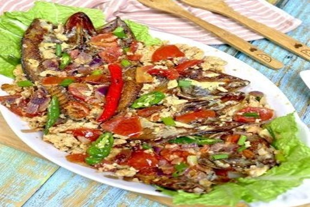

Sarciadong Daing
What is Sarciadong Daing?
Sarciadong Daing or Sarciadong Buwad is a quick and easy recipe involving daing (salted dried fish). Fried daing is quickly cooked with a tomato-based sauce. It can be consumed as a main dish with steamed white rice.
Ingredients
3 pcs Daing na Tuyo dried Fish
2 eggs
1 onion sliced
3 cloves garlic
3 large ripe tomatoes
4 tbsp Canola cooking oil
1 to 2 cups water
2 tbsp chopped green onions for garnish
2 pcs green chili
Instructions / How to Cook
1. In a bowl crack and beat 2 eggs then set aside.
2. Pour 2 tbsp Canola Oil in a pan.
3. Fry Daing until golden brown.
4. Remove from the pan and place on a paper towel to drain excess oil.
5. In a new pan pour 2 tbsp Canola Oil.
6. Add garlic and saute.
7. Add onion and continue to saute until onion is translucent.
8. Add tomato and a pinch of black pepper then mix.
9. Add a pinch of salt and 1/2 cup of water.
10. Cover and cook for 3 minutes.
11. Once the tomatoes are cooked you can now add daing then mix.
12. Add 1/2 cup water.
13. Add egg then cover and cook for 5 minutes.
14. Add chili and scallions.
15. Our Sarciadong Daing is now ready to Serve!